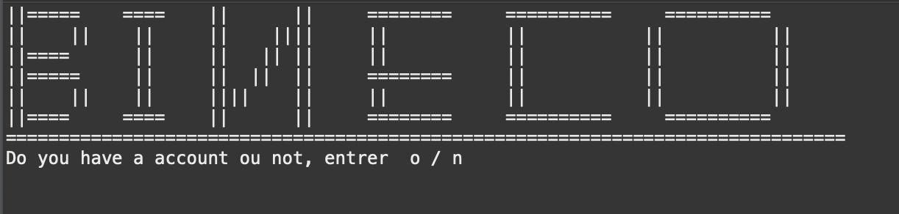
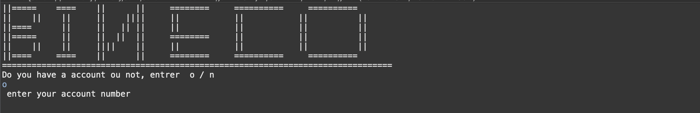
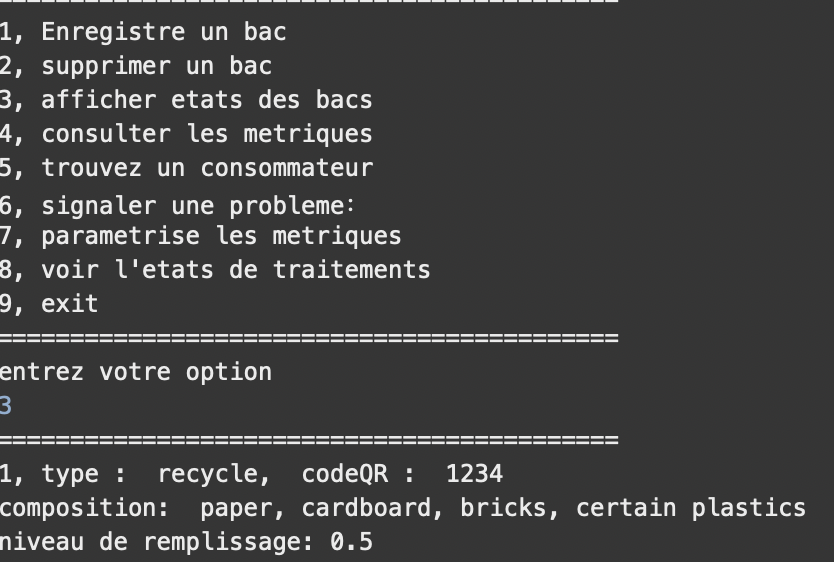
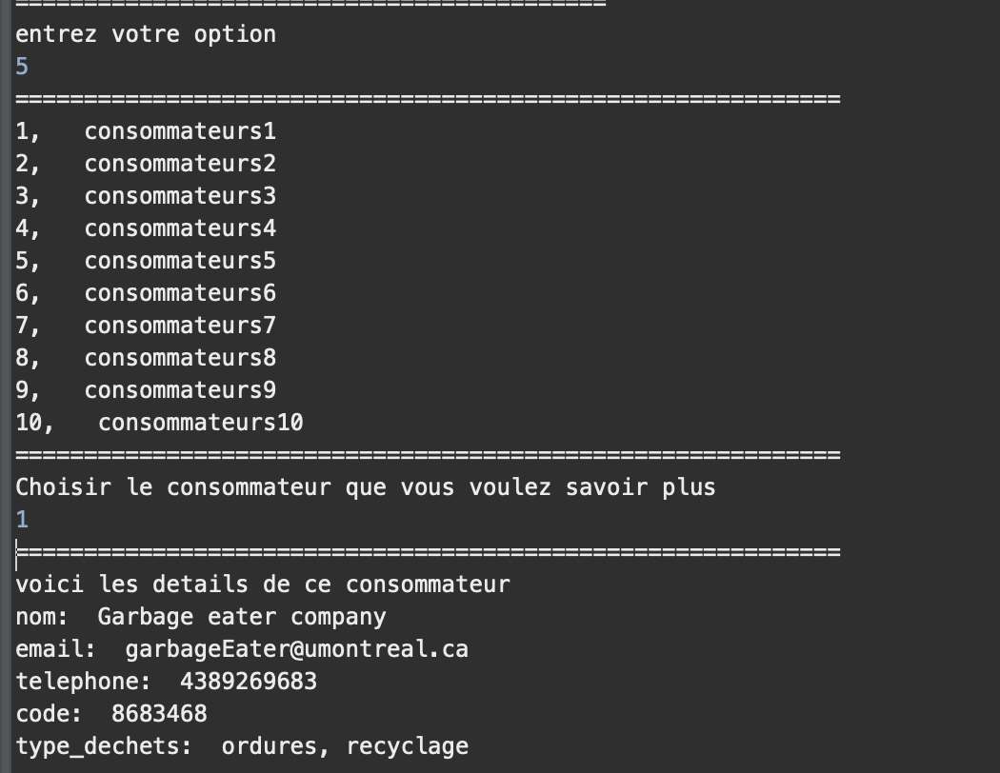
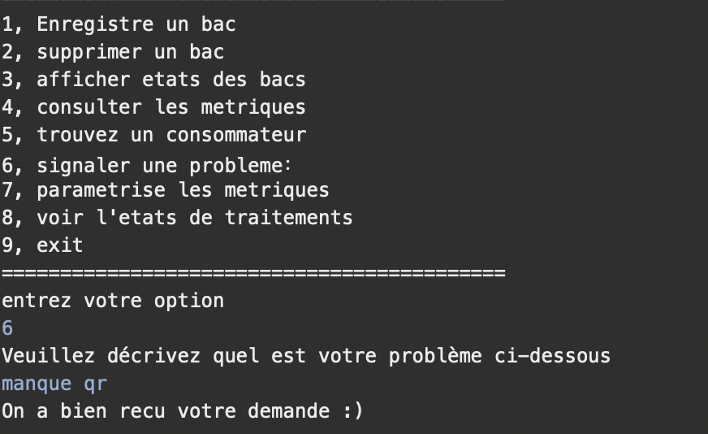

Bineco
Court résumé du rapport Bineco un outil pour encourager le recyclage et réduire le gaspillage des résidus alimentaires
Notre équipe
Plannification
Description
Le domaine de ce projet est la gestion des déchets des résidents de la ville de Montréal.
Le problème à résoudre est le manque d’information et de contrôle que les résidents ont sur
l’acheminement de leurs déchets. La création de l’outil Bineco vise à rendre accessible
le suivi des déchets en fournissant plusieurs métriques et d’autres informations sur les
déchets des résidents, afin que ces derniers fassent des meilleures actions écologiques..
Échéancier avec distribution des tâches
le jalon 2 tiendra d'une durée de trois semaine.
les taches seront distribuer en mode incrementale iteratif.
jianxin You : diagramme de classe + implementation java.
zeinab taleb: diagramme d'activite + metrique + implementaion html.
Harold Jose-Cruz : diagramme de sequence + implementation java.
Compréhension du domaine
Après de nombreuses rencontres avec le client et une familiarisation avec les activités de recyclage et compostage,
nous avons préparé un glossaire rassemblant les termes et expressions clés caractérisant l'environnement.
echange avec le client :
1.Est-ce qu’un résident peut être en même temps un consommateur sur le même compte ?
non
2.Est-ce que chaque type (compost, recyclage, ordure) de bac a un code Qr différent?
oui
3.Est-ce qu’un code Qr peut être remplacer par un code barre ?
4.Non le code Qr diminue le niveau de risque que le résident peut avoir en cas de scannage de code Qr le résident ne peut pas se tromper mais en entrant le code barre cela peut augmenter le risque qu’un résident rentre un code barre erroné.
5.Est ce que le capteur enregistre les informations (evolution periodique du contenu des bacs ) ou ces municipInfo?
le capteur ne fait que collecter les informations, donc, on stock les informations dans d'autre classe
Glossaire
- résidents
- les habitant de la ville de Montréal.
- Consommateur de déchets
- Organisation qui mène des activités de compostage et de recyclage des déchets des résidents.
- La ville (municipale)
- fournisseur des bacs; captent les informations sur le contenues des bacs; mise a jours de la liste de consommateurs; fournit la plage d’horaire de ramassage de la poubelle; reçoit les signaux qui sont émis par les résidents.
- Capteur
- mécanisme implémentée dans le système Bineco permettant de recevoir de l’information sur d'inventorisation du contenu des bac.
- Bineco
- outil permetant la communication des activités de recyclage et compostage résultant du travail de tri effectué dans les foyers
- bacs
- il existe trois bacs : ordure, recyclage et compostage
- lieu
- Montréal
- code Qr
- specifique a chaque bacs permettant d'identifier un bac
- municeInfo
- un service permettant de traiter et de mettre en memoire les donnee de bineco
Persona
Modélisation du domaine
Cas d'utilisation
Scénarios
Scénario principal
- Résident sélectionne un type de bac qu'il veut enregistrer.
- Donne un nom à son bac.
- Scanne la code QR du son bac.
- Système vérifie les informations.
- Système affiche la page de réussi.
Scénario principal
- Résident se connecte.
- Résident consulte les métriques.
- Système affiche les métriques.
Scénario principal
- Résident consulte les consommateurs.
- Système affiche une page de consommateurs avec un mécanisme de recherche.
- Résident clique le consommateur qu'il veut contacter.
- Système affiche les informations plus précises sur ce consommateur.
Scénarios alternatifs
Scénario principal
- Résident crée son nom d’utilisateur unique et rentre son mot de passe.
- Système affiche un formulaire.
- L’utilisateur remplit le formulaire.
- L’utilisateur remet le formulaire.
- systeme verifie les information
- Système affiche la page de réussi.
Scénarios alternatifs
Scénario principal
- Le résident choisi l’option d’inscription.
- Le système affiche un formulaire.
- Le résident remplit le formulaire.
- Le résident remet le formulaire.
- Système affiche le menu principal.
Scénarios alternatifs
Scénario principal
- Consommateurs choisie l’option de s’inscrire comme consommateur.
- Le système affiche un formulaire.
- Consommateur remplit le formulaire.
- Consommateur remet le formulaire.
- Système affiche la page de réussite.
Scénarios alternatifs
Scénario principal
- Camion envoie les informations sur les déchets dès qu'il arrive à un checkpoint.
- Municipale analyse les informations.
- Municipale élabore les métriques.
- Municipale met à jour les métriques.
Scénario principal
- le systeme affiche les metriques
- l'utilisateur choisi un metrique
- l'utilisateur modifie les parametres.
- le systeme calcule les nouveaux metriques
Scénarios alternatifs
Scénario principal
- Résident se connecte.
- Système affiche un formulaire.
- Résident pose le problème et remplit le formulaire.
- resident specifie le bac avec lequel il a une probleme
- Système affiche la page de réussi.
Scénarios alternatifs
Scénario principal
- la ville met a jour letat de traitement de dechet
- le resident consulte les metriques
Scénario principal
- le consommateur remplie le formulaire
- le consommateur choisie le type de probleme
- le consommateur choisie la categorie du dechet
- le systeme envoie la notification a tous les resident enregistrer dans le systeme
Scénario principal
- le resident remplie le formulaire
- le resident choisie un consommateur
- le resident choisie le type d'activités
- le resident choisie une note entre de 1 a 5
- le resident confirmele formulaire
- le systeme enregistre la note accorde au consommateur
- calcule de la moyenne des notes données a ce consommateur
Analyse
Notre analyse préliminaire nous a permis d'élucider les besoins et risques suivants...
Risques
- Indisponibilité de ressource informatique: les résidents qui non pas de matériels électroniques permettant d'utiliser l'application.
- La température externe: en cas de tempête de neige cela peut conduit à un décalage de l'arrivée des camions qui collectent la poubelle
- Ne pas trouver un consommateur: les déchets vont s'accumuler et la poubelle ne sera pas recyclé.
- Panne de courant : aucun utilisateur sera en mesure de modifier les données ou accédé au compte.
- Niveau de remplissage atteint: niveau de remplissage de la poubelle est à 100% mais il reste de poubelle a jeté, donc le résident ne sera pas en mesure d enregistrer le niveau de remplissage.
besoin non-fonctionnelles
- Le système ne permet pas les duplications de données : le code Qr ne peut pas être enregistrer deux fois pour deux adresses diffèrent.
- Comporte vis à vis du temps: la ville met en contact les résidents de l'heure de cueillette de la poubelle.
- Le système consiste la présence des données spécifiques : chaque utilisateur doit enregistrer le code Qr des bacs pour effectuer les tâches suivantes: Afficher l'état des bacs, Voir l'état de traitement des déchets.
- Maintenance : Le système est suffisamment intuitif pour faciliter l'opération au client: les utilisateurs peuvent changer leurs données personnelles par exemple en cas d'un déménagement.
- Le système est suffisamment intuitif pour faciliter l'opération des utilisateurs : la possibilité de revenir au menu principal sans quitter l'application.
- Performance : lorsqu’un résident ajoute de la poubelle le niveau de remplissage change en 5 secondes.
- Sécurité : le système doit avoir un système de sécurité puisque l'utilisateur enregistre cette donnée personnelle pour cela le système exige un mot de passe de 12 caractères: au moins une lettre majuscule, lettre minuscule, chiffre et caractère spécial.
- Le système doit être quantifiées: le système doit pouvoir traiter 100000 utilisateurs simultanément avec un temps de réponse inférieur à 2 secondes par utilisateur.
Besoin matériels
Parties à informatiser:
- Gestion des résidents.
- Gestion des consommateurs.
- Gestion des bacs (recyclage, ordure, compostage).
Matériels nécessaires:
- Ordinateurs personnels.
- Disponibilité d'un cellulaire ou ordinateur chez l'utilisateurs de l'application Bineco.
- Bac de recyclage, composte, et ordure.
- Camion pour collecter la poubelle.
- Accès à l'internet.
Solution de stockage :
- Fichier CSV.
- Un cache intégré pour fournir la vitesse de la RAM avec la durabilité du disque).
- Données sont stockées sur un disque.
Contraintes
physique:
- Trois bacs de poubelle différents (composte, recyclage et ordure) avec un code Qr
- Chaque le code QR est Lié à une adresse
- Une mémoire allant jusqu'à 2 MB pour les résidents permettant de sauvegarder leurs changements de poubelles.
- Mémoire de stockage allant jusqu’à 50 Terra pour les serveurs de la municipale permettant de stocker les différentes métriques et donnés des consommateurs et des résidents.
conceptuelle:
- Langage de programmation java qui permet de gérer l'application plus rapidement, même avant que le programme soit exécuté la compilation va traduire le code en code machine.
- le capteur peut detecter les elements selon le bacs
- format des données du capteur en CSV
- Compatibilité avec le système municipal (API)
- Abstraction choisie pour encapsuler les entités du domaine
- nteraction en ligne de commande
Propositions
- niveau de participation au compostage
- niveau de participation au recyclage
- le score ecologique
- le score economique
- proportion d'erreur de compostage
- proportion d'erreur de recyclage
- niveau de remplissage d'ordure
- niveau de remplissage de bac de recyclage
- niveau de remplissage de bac de compostage
Livrable
diagramme d'activite
affichage menu principal

enregistrer un bac

enregistrer un bac

afficher l'etat de traitement municipal

trouver un consommateur

signaler un probleme

noter un consommateur

notifier un resident

afficher les metriques

paramtriser les metriques

diagramme de classe
diagramme de sequence
.png)
.png)
.png)
Discussion design
Le design de notre programme utilise le MVC. Le programme est donc composé de classes d’entité,
d’interface et de controlleur.
Ce design : favorise la cohésion du programme en séparant le programme en modules;
et diminue le couplage, car chaque type de classe a son propre rôle.
Le logiciel est fonctionnel à la fin grâce
aux controlleurs liant l’interface et les entités. Ensuite, nous utilisons l’inhéritance ce qui prend avantage
de la réutilisabilité du code dans les langages orienté objet.
En ce qui concerne l’encapsulation, les classes
d’entités contient seulement les attributs concernant l’entité, et les méthodes qui concernent ces attributs.
On met en accès publique les méthodes dont les utilisateurs ont besoin d’appeler à travers les interfaces.
Prototype
-
bineco
 premiere page de l’outil -
connect
 connection au bineco -
menu principal
 presentation de menu
presentation de menu
-
enregistrer un bac
 resident veut enregistrer un bac
resident veut enregistrer un bac
-
etat de bac
 visualiser etat des bacs -
metriques
 affciher les metriques
affciher les metriques
-
liste consommateur
 afficher la liste des consommateur -
signaler
 signaler une probleme au municipal -
etat de traitement
 visualiser etat de traitement de dechet
visualiser etat de traitement de dechet